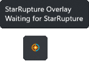
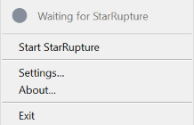

SETUP / WINDOWS X64
Install and update
Choose the right build, check the download and start StarRupture Overlay.
Choose the build for your game
The Update 2 release supports the Steam release of Update 2: Quality of Life with Hotfix 0.3.5. The Update 3 release supports the public Steam release of Update 3. Check that your game version matches its release notes before downloading.
Both builds require 64-bit Windows 10 or 11. Windowed, Borderless and the tested Fullscreen configuration are supported. If the overlay does not appear in fullscreen, try Borderless.
View downloads ↓Install and start
- Download the Windows x64 ZIP using the website’s download button. Open that version’s release page for the matching
.sha256file. GitHub's Source code archives are not the app. - Check the ZIP's checksum, then extract the complete ZIP into a folder you want to keep. Keep the included files together.
- Open
starrupture-overlay.exe. Run it normally, without administrator access. - Start StarRupture and load a world. You can also choose Start StarRupture from the overlay's notification-area menu.
The app finds the game automatically. Update 3 can show a startup splash and Windows notifications while waiting for the game or when the overlay connects. After you load a world, the app prepares the Codex and recipe tracker from the installed game. Setup runs locally and needs no extra tools or downloads.
Check your download
Open PowerShell in your download folder and run the command below with the name of your downloaded ZIP. Compare the result with the matching .sha256 file.
Get-FileHash -Algorithm SHA256 -LiteralPath '.\YOUR-DOWNLOADED-FILE.zip'A matching checksum confirms that your download matches the published file. It does not verify who published it.
The app is unsigned, so Windows may show a SmartScreen warning. Use the website or the project's GitHub release page, check the checksum and continue only if you trust the file. You do not need to disable Windows security or run the app as administrator.
Find the controls


Right-click the overlay's icon in the Windows notification area to open its menu. It may be under the hidden-icons arrow. Double-click the icon to open Settings.
Use Settings to create an optional desktop shortcut that starts both the overlay and StarRupture through Steam. Start with Windows is optional and off by default.
Update without losing your settings
- Exit the overlay from its notification-area menu.
- Extract the new ZIP to a new folder. Keep the old folder until you have checked that the new version works.
- Open the new copy and update its desktop shortcut in Settings. If Start with Windows was enabled, disable it in the old copy and enable it in the new one.
Settings and caches are stored under %LOCALAPPDATA%/StarRuptureWaveOverlay. Replacing the app folder does not delete them. Run one copy of the overlay at a time.
Remove the app
Disable Start with Windows and remove the optional shortcut in Settings. Exit the app, then delete its extracted folder. If you also want to remove its settings and caches, delete its local application-data folder after exiting.